Linear algebra notes
Linear algebra examples and visualizations to reinforce the theory.
Matrices and linear mapping
Invertible matrix interpretation
A matrix is invertible, means that it can maps a vector into another uniquely.
Analogously to a function map which is invertible when it is bijective.
A linear map is injective if it has non zero determinant.
The image of basis vectors of the domain are linearly independent.
Determinant and scaling
In two dimension it measures the area scaling.
In three dimension, the determinant measures the scaling factor the matrix stretches a volume. Is the ratio between volumes.
In n-dimension is the hyper-volume scaling.
Linear mapping the basis vectors
import numpy as np
import matplotlib.pyplot as plt
import matplotlib
matplotlib.style.use('ggplot')
A = np.array([[3, 0], [0, 2]])
fig, ax = plt.subplots()
ax.quiver([0, 0], [0, 0], A[0, :], A[1, :], units='xy', scale=1)
ax.axis('scaled')
ax.set_xlim(- np.max(A[0, :]) - 1, np.max(A[0, :]) + 1)
ax.set_ylim(- np.max(A[1, :]) - 1, np.max(A[1, :]) + 1)
ax.add_patch(plt.Rectangle((0,0), 1, 1, fc='y', alpha=.3))
e1, e2 = np.array([1, 0]), np.array([0, 1])
ax.add_patch(plt.Rectangle((0,0), A[0,0], A[1,1], fc='g', alpha=.1))
print(np.linalg.det(A))6.0
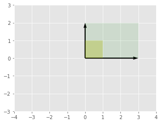
Remarks:
-
determinant: is the scale between the two areas, 1 and 6.
Condition number and eigenpairs
Linear system
The RHS is set as the first column of $A$. Which means that the "mapped" vector is in the column space of $A$.
import numpy as np
np.set_printoptions(precision=3, suppress=True)
A = np.array([[4, 6], [3, -2]])
b = A[:, 0]
print(A, b)
x = np.linalg.solve(A, b)
print(x)[[ 4 6] [ 3 -2]] [4 3] [ 1. -0.]
Remarks:
-
columns of $A$ are linearly independent hence there is only one solution to the system.
-
$A$ is not symmetric.
Visualizing the column space
import matplotlib.pyplot as plt
import matplotlib
matplotlib.style.use('ggplot')
fig, ax = plt.subplots()
ax.quiver([0, 0], [0, 0], A[0, :], A[1, :], units='xy', scale=1)
ax.axis('scaled')
ax.set_xlim(np.max(np.abs(A[0, :])) * np.array([-1, 1]) * 1.1)
ax.set_ylim(np.max(np.abs(A[1, :])) * np.array([-1, 1]) * 1.1)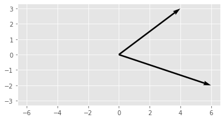
Remarks:
-
the column vectors are almost linearly dependent
If we add a perturbation to $b$
b = A[:, 0] + 0.01
print(b)
x = np.linalg.solve(A, b)
print(x)[4.01 3.01] [ 1.003 -0. ]
Remarks:
-
solution almost did not change.
Condition number
cn = np.linalg.norm(A) * np.linalg.norm(np.linalg.inv(A))
cn2 = np.linalg.norm(A, ord=np.inf) * np.linalg.norm(np.linalg.inv(A), ord=np.inf)
print(cn)
print(cn2)
print(np.linalg.cond(A))
print(np.linalg.cond(A, p=np.inf))2.5 3.076923076923077 2.0 3.076923076923077
Remarks:
-
default numpy norm function is the Frobenius norm (element wise) $\sum_i (x_i^2)^{1/2}$.
-
the default norm of the condition number is the 2-norm (largest singular value).
-
if $A$ is symmetric the condition number with the 2-norm is related to the eigenvalues relation, because the eigenvalues are related to the singular values.
-
the 2-norm is also known as spectral norm of the matrix.
Eigenvalues of $A$
eigvals, eigvec = np.linalg.eig(A)
print(eigvals)
print(np.abs(eigvals.max()) / np.abs(eigvals.min()))
print(np.linalg.cond(A))[ 6.196 -4.196] 1.4766271094389716 2.0
Remarks:
-
no clear relation between the eigenvalues and the condition number.
-
they are related when the absolute value of eigenvalues are the same as the singular values.
-
Eigenvectors of $A$
import matplotlib.pyplot as plt
import matplotlib
matplotlib.style.use('ggplot')
fig, ax = plt.subplots()
ax.arrow(*[0, 0], *eigvec[:, 0], color='k', width=.02, length_includes_head=True)
ax.arrow(*[0, 0], *eigvec[:, 1], color='k', width=.02, length_includes_head=True)
ax.axis('scaled')
ax.set_xlim(np.max(np.abs(eigvec[0, :])) * np.array([-1, 1]) * 1.1)
ax.set_ylim(np.max(np.abs(eigvec[1, :])) * np.array([-1, 1]) * 1.1)
print(eigvec[:, 0] @ eigvec[:, 1])-0.27735009811261463
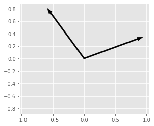
Remarks:
-
eigenvectors not orthogonal.
If $A$ is symmetric
B = np.copy(A)
B[1, 0] = B[0, 1]
eigvals_B, eigvec_B = np.linalg.eig(B)
print(eigvals_B)
print(np.abs(eigvals_B.max()) / np.abs(eigvals_B.min()))
print(np.linalg.cond(B))[ 7.708 -5.708] 1.3503729060226988 1.350372906022699
Remarks:
-
if $A$ is symmetric the condition number is the same as the ration between the max and min absolute value of eigenvalues.
Eigenvectors of $A$ symmetric
import matplotlib.pyplot as plt
import matplotlib
matplotlib.style.use('ggplot')
fig, ax = plt.subplots()
ax.arrow(*[0, 0], *eigvec_B[:, 0], color='k', width=.05)
ax.arrow(*[0, 0], *eigvec_B[:, 1], color='k', width=.05)
ax.axis('scaled')
ax.set_xlim(max(eigvec_B[0, :], key=abs)*np.array([-1, 1])*1.5)
ax.set_ylim(max(eigvec_B[1, :], key=abs)*np.array([-1, 1])*1.5)
print(eigvec_B[:, 0] @ eigvec_B[:, 1])0.0

Remarks:
-
eigenvectors orthogonal.
-
the original matrix was not too far from been symmetric.
$A$ almost singular
A singular matrix has its determinant equal to zero.
As = np.copy(A) * 1.0
print(As)
print(As[0, 0]*As[1, 1]/As[0, 1])
As[1, 0] = As[0, 0]*As[1, 1]/As[0, 1] - 0.01
print(As)
print(As[0, 0]*As[1, 1] - As[0, 1]*As[1, 0])[[ 4. 6.] [ 3. -2.]] -1.3333333333333333 [[ 4. 6. ] [-1.343 -2. ]] 0.05999999999999872
Remarks:
-
singular means that the matrix is not invertible and the system has no solution.
-
almost singular by changing the term that would make the
Visualizing the almost singular matrix
import matplotlib.pyplot as plt
import matplotlib
matplotlib.style.use('ggplot')
fig, ax = plt.subplots()
ax.arrow(*[0, 0], *As[:, 0], color='k', width=.05, length_includes_head=True)
ax.arrow(*[0, 0], *As[:, 1], color='r', width=.05, length_includes_head=True)
ax.set_xlim(np.max(np.abs(As[0, :])) * np.array([-1, 1]) * 1.1)
ax.set_ylim(np.max(np.abs(As[1, :])) * np.array([-1, 1]) * 1.1)
ax.axis('scaled')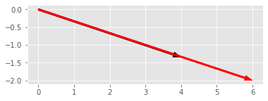
Remarks
-
almost linear dependent vector columns.
-
system close to singularity, with no unique solution, without inverse.
Eigenvectors of $A$ almost singular
import matplotlib.pyplot as plt
import matplotlib
matplotlib.style.use('ggplot')
eigvalue_As, eigvec_As = np.linalg.eig(As)
fig, ax = plt.subplots()
ax.arrow(*[0, 0], *eigvec_As[:, 0], color='k', width=.02, length_includes_head=True)
ax.arrow(*[0, 0], *eigvec_As[:, 1], color='r', width=.02, length_includes_head=True)
ax.axis('scaled')
ax.set_xlim(np.max(np.abs(eigvec_As[0, :])) * np.array([-1, 1]) * 1.1)
ax.set_ylim(np.max(np.abs(eigvec_As[1, :])) * np.array([-1, 1]) * 1.1)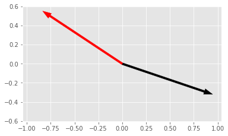
Remarks:
-
eigenvectors almost with the same direction, linearly dependent.
Effects on singularity on condition number
print(np.linalg.cond(As))963.4080360922819
Remarks:
-
large condition number when matrix is close to singular.
Effect of large condition number on eigenvalues
print(np.linalg.eigvals(As))
print(np.linalg.eigvals(A))[1.97 0.03] [ 6.196 -4.196]
Remarks:
-
eigenvalue close to zero because matrix is close to be singular (zero determinant, no inverse).
Singular values and eigenvalues of Gram matrix
Krylov subspace matrix
import numpy as np
np.set_printoptions(3, suppress=True)
n = 4
krylov_dimension = 4
A = np.diagflat(np.arange(1, n+1))
b = np.ones(n)
K = np.empty((n, krylov_dimension))
K[:, 0] = b
for k in range(1, krylov_dimension):
K[:, k] = A**k @ b
print(A)
print(b)
print(K)
print('cond(K): ', np.linalg.cond(K))[[1 0 0 0] [0 2 0 0] [0 0 3 0] [0 0 0 4]] [1. 1. 1. 1.] [[ 1. 1. 1. 1.] [ 1. 2. 4. 8.] [ 1. 3. 9. 27.] [ 1. 4. 16. 64.]] cond(K): 1171.012685914989
Remarks:
-
Krylov matrix is very ill conditioned. Why?
Eigenvalues of the Krylov matrix
eigval = np.linalg.eigvals(K)
print(eigval)
_, singval, _ = np.linalg.svd(K)
print(singval)[71.599 3.62 0.717 0.065] [72.554 3.655 0.73 0.062]
Remarks:
-
wide range between maximum and minimum.
-
the Krylov matrix is not symmetric, therefore the eigenvalues are not the condition number.
-
but they are close.
-
Gram matrix derived from the Krylov matrix
Ks = K.T @ K # Gram matrix
print(Ks)
eigval = np.linalg.eigvals(Ks)
print(eigval)
print(eigval**(.5))
_, singval, _ = np.linalg.svd(K)
print(singval)
print(singval**2)[[ 4. 10. 30. 100.] [ 10. 30. 100. 354.] [ 30. 100. 354. 1300.] [ 100. 354. 1300. 4890.]] [5264.103 13.359 0.533 0.004] [72.554 3.655 0.73 0.062] [72.554 3.655 0.73 0.062] [5264.103 13.359 0.533 0.004]
Remarks:
-
Gram matrix is the inner products between the columns of the Krylov matrix.
-
larger the inner product means large projection, means that they are almost "pointing" in the same direction, almost a scale of the other, almost linearly dependent.
-
if the columns are almost linearly dependent the system is almost singular.
-
Gram matrix measures how independent are the column vectors.
-
-
the eigenvalues of the Gram matrix are the square of the singular values of the Krylov matrix.
Ill conditioning almost singular matrix
Definition
We want to solve the linear system $Ax=b$. This means we want to find a linear combination of $col(A)$ that returns $b$. Or, alternatively, we want to check if $b$ is in the space defined by the columns of $A$, $b \in col(A)$?
When columns of $A$ are ill-conditioned, the ratio of the singular values range is large. The singular values are related to the eigenvalues of the $A^T A$ symmetric matrix by $\sigma^2 = eigvals(A^T A)$. The condition number $\kappa = \sigma_1 / \sigma_r$, where $\sigma_1$ is the maximum and $\sigma_r$ the minimum. Also, the condition number is defined by $ \lVert A \rVert \lVert A^{-1} \rVert$.
Column vectors almost same direction
import numpy as np
import matplotlib.pyplot as plt
import matplotlib
matplotlib.style.use('ggplot')
np.set_printoptions(precision=3, suppress=True)
e = 1e-6
A = np.array([[1, 1], [1, 1 - e]])
print(A)
b = np.array([20, 20 - 10 * e])
print(b)
x = np.linalg.solve(A, b)
print(x)
fig, ax = plt.subplots()
ax.arrow(*[0, 0], *A[0, :], color='k', width=.01, length_includes_head=True)
ax.arrow(*[0, 0], *A[1, :], color='k', width=.01, length_includes_head=True)
ax.axis('scaled')
print(np.linalg.det(A))[[1. 1.] [1. 1.]] [20. 20.] [10. 10.] -1.000000000028756e-06
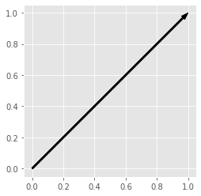
Remarks:
-
the second equation is slightly different from the first, just has an minor error.
-
imperceptible difference in the direction.
-
matrix almost singular, no inverse, determinant close to 0, columns close to be linearly dependent.
Slight change in the second matrix
e = 1e-6
A = np.array([[1, 1], [1, 1 + e]])
print(A)
b = np.array([20, 20 - 10 * e])
print(b)
x = np.linalg.solve(A, b)
print(x)[[1. 1.] [1. 1.]] [20. 20.] [ 30. -10.]
Remarks:
-
just changed the sign on second diagonal, the solution completely changed from [10, 10] to [30, -10].
Eigenvectors and eigenvalues
eigval, eigvec = np.linalg.eig(A)
print('eigenvalues: ', eigval)
print('eigenvectors: ', eigvec)
print('eigenvectors orthogonal? ', eigvec[:, 0].T @ eigvec[:, 1] == 0)
print('determinant A: ', np.linalg.det(A))
_, singval, _ = np.linalg.svd(A)
print('singular values: ', singval, singval == eigval)
fig, ax = plt.subplots()
ax.arrow(*[0, 0], *eigvec[:, 0], color='k', width=.02, length_includes_head=True)
ax.arrow(*[0, 0], *eigvec[:, 1], color='k', width=.02, length_includes_head=True)
ax.axis('scaled')eigenvalues: [ 1.99999950e+00 -5.00000125e-07] eigenvectors: [[ 0.70710696 -0.7071066 ] [ 0.7071066 0.70710696]] eigenvectors orthogonal? True determinant A: -1.000000000028756e-06 singular values: [1.99999950e+00 5.00000125e-07] [False False]
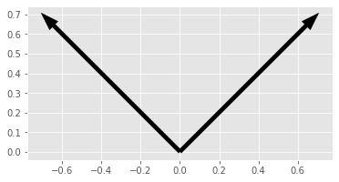
Remarks:
-
eigenvectors are orthogonal (we can see from figure, and dot product equal to 0)
-
one eigenvalue is negative and almost zero
-
determinant almost zero, sign of almost singular matrix, no inverse
-
singular values resemble the eigenvalues
-
singular values are always positive
-
singular values and eigenvalues are the same when the matrix is normal
-
Gram matrix
eigval, eigvec = np.linalg.eig(A.T @ A)
print('Gram matrix: ', A.T @ A)
print('eigenvalues: ', eigval)
print('square route of eigenvalues: ', np.sqrt(eigval))
print('eigenvectors: ', eigvec)
print('eigenvectors orthogonal? ', eigvec[:, 0].T @ eigvec[:, 1] == 0)
print('determinant A: ', np.linalg.det(A))
_, singval, _ = np.linalg.svd(A)
print('singular values: ', singval, np.isclose(singval, np.sqrt(eigval), atol=1e-8))
fig, ax = plt.subplots()
ax.arrow(*[0, 0], *eigvec[:, 0], color='k', width=.02, length_includes_head=True)
ax.arrow(*[0, 0], *eigvec[:, 1], color='k', width=.02, length_includes_head=True)
ax.axis('scaled')Gram matrix: [[2. 1.999999] [1.999999 1.999998]] eigenvalues: [3.99999800e+00 2.49800181e-13] square route of eigenvalues: [1.99999950e+00 4.99800141e-07] eigenvectors: [[ 0.70710696 -0.7071066 ] [ 0.7071066 0.70710696]] eigenvectors orthogonal? True determinant A: -1.000000000028756e-06 singular values: [1.99999950e+00 5.00000125e-07] [ True True]
Remarks:
-
Gram matrix is symmetric.
-
columns of gram matrix almost the same, because projection of vectors that point almost to the same direction.
-
one eigenvalue of the Gram matrix is almost zero.
-
singular value is the same as the square route of eigenvalues of the Gram matrix.
-
one singular value is close to zero, which makes the condition number high
-
even with orthogonal eigenvectors, the condition number can be high.
Condition number
print(np.linalg.cond(A))
print(np.linalg.norm(A) * np.linalg.norm(np.linalg.inv(A)))
print(np.abs(eigval[0]) / np.abs(eigval[1]))
print(np.abs(singval[0]) / np.abs(singval[1]))3999997.999702917 3999997.9998859772 3999998.000240916 3999997.999702917
Remarks:
-
condition number is very large (good condition number is 1).
-
eigenvalue approximate the condition number because they are similar to singular values.
Ill conditioning matrix with large discrepancies but non singular
Column vectors almost same direction but nonsingular
import numpy as np
import matplotlib.pyplot as plt
import matplotlib
matplotlib.style.use('ggplot')
np.set_printoptions(precision=3, suppress=True)
e = 100
A = np.array([[1, e], [0, 2]])
print(A)
b = np.array([20, 20 - 10 * e])
print(b)
x = np.linalg.solve(A, b)
print(x)
fig, ax = plt.subplots()
ax.arrow(*[0, 0], *A[0, :], color='k', width=.02, length_includes_head=True)
ax.arrow(*[0, 0], *A[1, :], color='k', width=.02, length_includes_head=True)
ax.axis('scaled')
print(np.linalg.det(A))[[ 1 100] [ 0 2]] [ 20 -980] [49020. -490.] 2.0
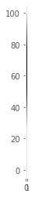
Remarks:
-
columns very different but linearly independent.
-
because of large value in on dimension, it appears that they point in the same direction.
Effects of linear transformation by this matrix
If we imagine the linear transformation of this matrix into the canonical base, we get as result the columns of $A$. The linear transformation for the whole space would create a huge distortion due the difference in magnitude.
Remarks:
-
the condition number is associated with the distortion of the linear transformation.
-
from the definition $\kappa = \lVert A \rVert_2 \lVert A^{-1} \rVert_2$ and $\lVert A \rVert_2 = max \lVert A x \rVert_2 / \lVert x \rVert_2$ .
-
the maximum singular value is related to the maximum distortion produced by the linear transformation.
-
-
large values in the columns produce large distortions hence large condition number.
Eigenvalues and eigenvectors
Matrix is triangular, the eigenvalues are the diagonal members because $det(A - I a[i, i])=0$, so $a[i, i]$ is an eigenvalue.
eigval, eigvec = np.linalg.eig(A)
print('eigenvalues: ', eigval)
print('eigenvectors: ', eigvec)
print('eigenvectors orthogonal? ', eigvec[:, 0].T @ eigvec[:, 1] == 0)
print('determinant A: ', np.linalg.det(A))
_, singval, _ = np.linalg.svd(A)
print('singular values: ', singval, singval == eigval)
fig, ax = plt.subplots()
ax.arrow(*[0, 0], *eigvec[:, 0], color='k', width=.02, length_includes_head=True)
ax.arrow(*[0, 0], *eigvec[:, 1], color='k', width=.02, length_includes_head=True)
ax.axis('scaled')eigenvalues: [1. 2.] eigenvectors: [[1. 1. ] [0. 0.01]] eigenvectors orthogonal? False determinant A: 2.0 singular values: [100.025 0.02 ] [False False]
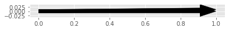
Remarks:
-
eigenvalues are well behaved.
-
eigenvectors point almost in the same direction.
-
determinant is different from zero, matrix is non singular.
-
eigenvalues are very different from singular values.
Condition number
print(np.linalg.cond(A))
print(np.linalg.norm(A) * np.linalg.norm(np.linalg.inv(A)))
print(np.abs(eigval[0]) / np.abs(eigval[1]))
print(np.abs(singval[0]) / np.abs(singval[1]))5002.499800099941 5002.499999999999 0.5 5002.499800099941
Remarks:
-
condition number is high because eigenvectors point almost to the same direction.
-
if the discrepancy in the off diagonal increases the condition number also increases, but the eigenvalues stay the same.
Gram matrix
G = A.T @ A
eigval, eigvec = np.linalg.eig(G)
print('Gram matrix: ', G)
print('eigenvalues: ', eigval)
print('square route of eigenvalues: ', np.sqrt(eigval))
print('eigenvectors: ', eigvec)
print('eigenvectors orthogonal? ', eigvec[:, 0].T @ eigvec[:, 1] == 0)
print('determinant A: ', np.linalg.det(A))
print('determinant G: ', np.linalg.det(G))
_, singval, _ = np.linalg.svd(A)
print('singular values: ', singval, np.isclose(singval, np.sqrt(eigval), atol=1e-8))
fig, ax = plt.subplots()
ax.arrow(*[0, 0], *eigvec[:, 0], color='k', width=.02, length_includes_head=True)
ax.arrow(*[0, 0], *eigvec[:, 1], color='k', width=.02, length_includes_head=True)
ax.axis('scaled')
fig, ax = plt.subplots()
ax.arrow(*[0, 0], *G[:, 0], color='k', width=.02, length_includes_head=True)
ax.arrow(*[0, 0], *G[:, 1], color='k', width=.02, length_includes_head=True)
ax.axis('scaled')Gram matrix: [[ 1 100] [ 100 10004]] eigenvalues: [ 0. 10005.] square route of eigenvalues: [ 0.02 100.025] eigenvectors: [[-1. -0.01] [ 0.01 -1. ]] eigenvectors orthogonal? True determinant A: 2.0 determinant G: 4.000000000000628 singular values: [100.025 0.02 ] [False False]
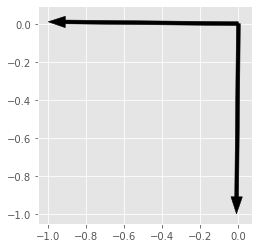
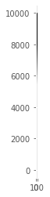
Remarks:
-
Gram matrix will have columns pointing to almost the same direction, just because of the scale.
-
not singular, determinant different from 0.
-
columns of $A$ almost pointing in the same direction because of scale will make columns of Gram almost linearly dependent.
-